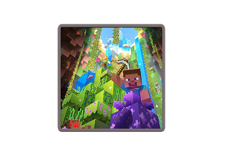
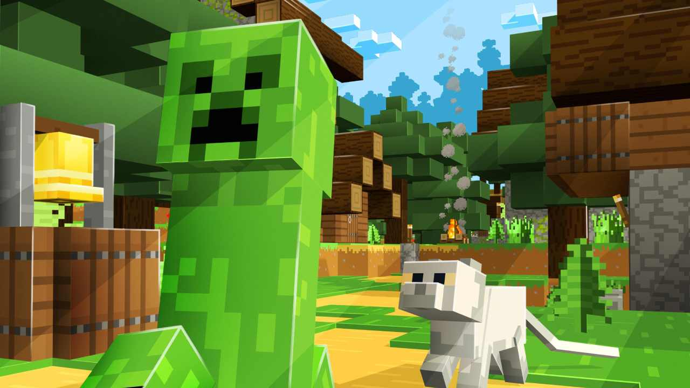

PERIODO DIGITALE - L’EVOLUZIONE DEI PIXEL
MINECRAFT
Rilasciato inizialmente nel 2009 dallo svedese Markus "Notch" Persson, Minecraft ha rotto ogni regola del mercato moderno. In un'epoca di grafica iper-realistica, ha trionfato con i suoi "blocchi" pixellati, diventando il videogioco più venduto di tutti i tempi. Non è solo un gioco: è il LEGO del XXI secolo, una tela bianca digitale dove l'unico limite è la pazienza del giocatore.
UN MONDO DI CUBI E LIBERTÀ
A differenza di quasi tutti i giochi precedenti, Minecraft non ti dice cosa fare. Ti deposita in un mondo generato proceduralmente (infinito e sempre diverso) e ti lascia scegliere:
- Sopravvivenza (Survival):Devi raccogliere risorse, costruire un rifugio prima che faccia buio e difenderti dai "Creeper" e dagli altri mostri notturni.
- Creatività (Creative):Hai risorse illimitate e la capacità di volare. Qui Minecraft diventa uno strumento di architettura pura, dove gli utenti hanno ricostruito intere città, castelli di Game of Thrones e persino computer funzionanti.



LA RIVOLUZIONE DEL ''SANDBOX''
Minecraft ha introdotto il concetto di gioco "sandbox" (recinto della sabbia) a un livello mai visto:
- Crafting:Il cuore del gioco è la combinazione di materiali. Legno e pietra diventano picconi; sabbia e carbone diventano vetro. Questa logica ha insegnato a milioni di ragazzi le basi della gestione delle risorse.
- Redstone:È l'equivalente dell'elettricità nel gioco. Usando la Redstone, i giocatori possono creare circuiti logici complessi, porte automatiche e macchinari incredibili, rendendo il gioco una piattaforma educativa per l'informatica.
- Comunità:Grazie ai server multigiocatore e a YouTube, Minecraft è diventato un'esperienza sociale globale, dove si collabora per costruire mondi interi.
L'EREDITÀ DIGITALE
Minecraft ha dimostrato che il "bello" nel digitale non è la risoluzione dei pixel, ma la profondità delle meccaniche. Ha trasformato il videogioco in uno strumento creativo usato oggi persino nelle scuole per insegnare storia, chimica e programmazione.
